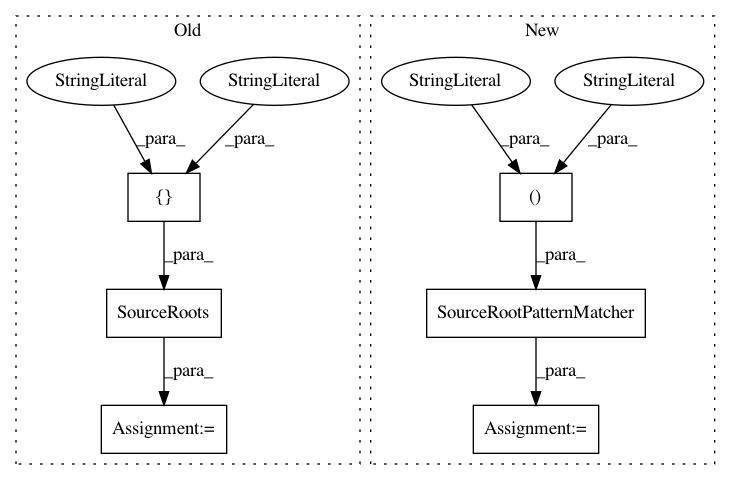

e8d588869e739d4f7b9de17af19617950545f3f3,src/python/pants/source/source_root_test.py,,test_fixed_source_roots,#,19
Before Change
def test_fixed_source_roots() -> None:
srs = SourceRoots(["/root1", "/foo/root2", "/root1/root3"])
assert SourceRoot("root1") == srs.strict_find_by_path("root1/bar.py")
assert SourceRoot("foo/root2") == srs.strict_find_by_path("foo/root2/bar/baz.py")
assert SourceRoot("root1/root3") == srs.strict_find_by_path("root1/root3/qux.py")
assert SourceRoot("root1/root3") == srs.strict_find_by_path("root1/root3/qux/quux.py")
After Change
def test_fixed_source_roots() -> None:
srpm = SourceRootPatternMatcher(("/root1", "/foo/root2", "/root1/root3"))
assert PurePath("root1") == srpm.find_root("root1/bar.py")
assert PurePath("foo/root2") == srpm.find_root("foo/root2/bar/baz.py")
assert PurePath("root1/root3") == srpm.find_root("root1/root3/qux.py")
assert PurePath("root1/root3") == srpm.find_root("root1/root3/qux/quux.py")
In pattern: SUPERPATTERN
Frequency: 3
Non-data size: 6
Instances
Project Name: pantsbuild/pants
Commit Name: e8d588869e739d4f7b9de17af19617950545f3f3
Time: 2020-06-04
Author: benjyw@gmail.com
File Name: src/python/pants/source/source_root_test.py
Class Name:
Method Name: test_fixed_source_roots
Project Name: pantsbuild/pants
Commit Name: e8d588869e739d4f7b9de17af19617950545f3f3
Time: 2020-06-04
Author: benjyw@gmail.com
File Name: src/python/pants/source/source_root_test.py
Class Name:
Method Name: test_source_root_patterns
Project Name: pantsbuild/pants
Commit Name: e8d588869e739d4f7b9de17af19617950545f3f3
Time: 2020-06-04
Author: benjyw@gmail.com
File Name: src/python/pants/source/source_root_test.py
Class Name:
Method Name: test_source_root_suffixes